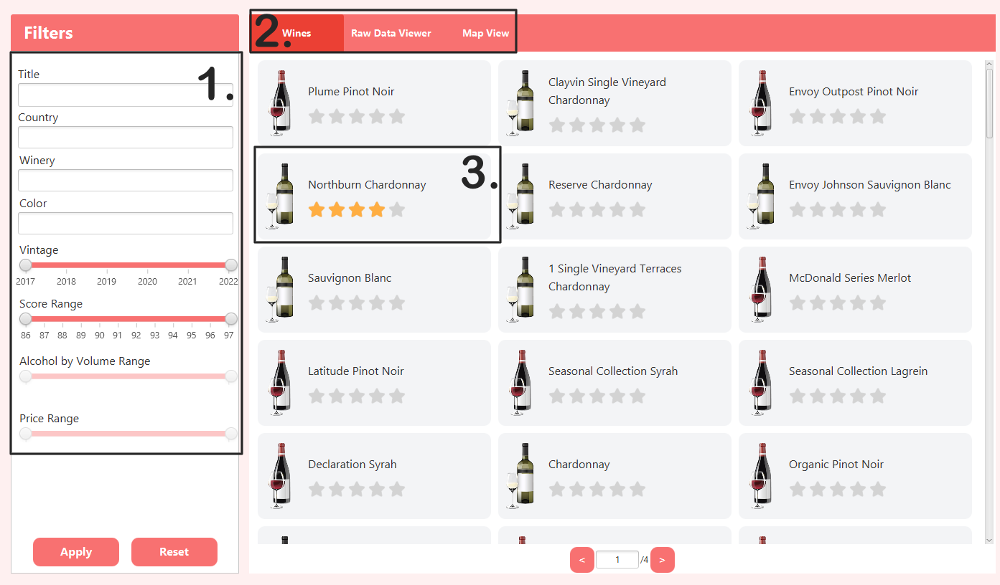
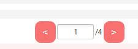

The View screen
The View screen contains the main wine screen, the raw data viewer, and the mapping tab. Upon opening the View screen, you will be greeted with the standard Wines screen:

Figure 1. The Wines view
This screen consists of several components:
-
The Filters block. This allows you to filter the wines in the database. These filters persist across the Wines, Raw Data, and Map screens.
-
The tab bar. This allows you to switch between the main view, raw data view, and map view.
-
The Wine cards. These show the name of the wine, its colour, and its title. You can open the detailed wine view by double-clicking on one of these.
More on these below:
Filtering
You can filter the data shown using the area on the left. There are several filters available:
Text Boxes
- Title: This allows you to search for a wine by its title.
- Country: This allows you to filter wines by country. This field has auto-complete available; Once you start typing the name of the country you want, you can click on the country name in the list which appears.
- Winery: Similar to the Country filter, this is an auto-completing filter that allows you to filter the wines by the winery which produced them.
- Colour: This allows you to filter the wines by colour / variety.
Sliders
-
Vintage: This allows you to select a range of years to filter by. This is capped to the lowest and highest year in the database.
-
Score Range: This allows you to select a range of taster scores to filter by. This is not related to the average review score (the star score shwon on the card)
-
Alcohol By Volume Range: Allows you to filter based on alcohol content.
-
Price Range: Allows you to filter based on a price range.
The two buttons at the bottom allow you to apply your filters, and reset the view to an unfiltered state.
Tab Bar
The tab bar allows you to switch between the Wine View, Raw Data View, and Map View. Your filters will persist across these three views.
Wine View
The Wine View is displayed as a grid of Wine Cards(3). Each wine card shows the title of the wine and its average user rating (out of 5 stars). Double-clicking on a wine card will bring up that wine's detailed view. At the bottom of the page is the page navigation.

Figure 2. Page Navigation
The buttons can be used to cycle back and forth between pages, or you can enter the desired page in the text box.
Wine Comparison